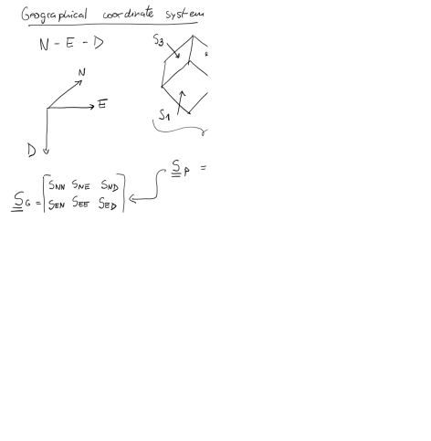

Next: 2. Continuum mechanics Up: Advanced Geomechanics - Class Notes Previous: Contents Contents
The figure below displays principal stresses in a well from the Vaca Muerta Formation
The figure does not show absolute depth values. This is a way oil companies “sanitize” their data, so that they do not reveal too much information that competitors could use to their advantage. We do know that depth grid spacing is 25 m. You will have to digitize this image to get numerical values. I recommend using https://apps.automeris.io/wpd/.
Tasks:
 points for A, B, C, D and E
points for A, B, C, D and E
 - points for A, B, C, D and E
- points for A, B, C, D and E
Go to https://github.com/dnicolasespinoza/GeomechanicsJupyter and download the files 1_14-1_Composite.las and 1_14-1 deviation_mod.dev. The first one is a well logging file (.LAS). You will find here measured depth (DEPTH - Track 1) and bulk mass density (RHOB - Track 8). Track 3 also shows bulk density correction (DRHO). Add RHOB to DRHO to obtain the corrected bulk mass density. The second file has the deviation survey of the well. Use this file to calculate true vertical depth subsea (TVDSS) as a function of measured depth (MD) in the well logging file. Water depth at this location is 104 m TVDSS. You may assume an average bulk mass density of 2 g/cc between the seafloor and the beginning of the density data. Summations with discrete data sets can be easily done through a ‘for’ loop or with a spreadsheet.
Note for Python users: you may want to use https://lasio.readthedocs.io/en/latest/index.html library to read LAS files.
Borehole imaging http://petrowiki.org/Borehole_imaging in the well from the Vaca Muerta Formation (Project 1) shows the presence of several fractures below Depth E.
We would like to know the shear stresses  and effective normal stresses  acting on these fractures.
acting on these fractures.
Additional borehole images at the depth of leak-off tests show that the azimuth of  is 90
is 90 (i.e., in East-West direction).
(i.e., in East-West direction).
Tasks to be implemented in Matlab, Python, or similar software:
versus diagram together with the 3D Mohr circle(s).
 from blue to red (e.g., JET colormap) according to the value of
from blue to red (e.g., JET colormap) according to the value of
 .
. About stereonets: Section 5.22 in https://dnicolasespinoza.github.io
.
. About stereonets: Section 5.22 in https://dnicolasespinoza.github.io
 )? What fractures are likely to be hydraulically conductive based on the
criterion and which others are not?
)? What fractures are likely to be hydraulically conductive based on the
criterion and which others are not?
 , dip =
, dip =
 ;
;
 , dip =
;
, dip =
;
Help: check Prof. Foster’s widget for the convention on rotation angles for the principal stress orientations.
The following figure and table summarize the geometry of faults at the High Island Block 24-L near the coast of the Gulf of Mexico and the Texas-Louisiana border.
| Fault ID | Segment origin | Segment end | Average Depth | Dip |
| (Easting, Northing) [ft] | (Easting, Northing) [ft] | [ft] | ||
| F1a | (308,16772) | (3338,16106) | 7250 | 53SW |
| F1b | (3338,16106) | (8116,16556) | 7150 | 53S |
| F1c | (8116,16556) | (12481,17589) | 7050 | 53SE |
| F1d | (12481,17589) | (17478,21367) | 7300 | 53SE |
| F2 | (5535,14938) | (7824,16209) | 7500 | 52SE |
| F3 | (15162,12008) | (17994,14322) | 7800 | 55SE |
| F4a | (713,13675) | (3623,14480) | 7400 | 56SE |
| F4b | (3623,14480) | (6489,14394) | 7400 | 56S |
| F4c | (6489,14394) | (10095,12178) | 7500 | 56SW |
| F4d | (10095,12178) | (14704,11738) | 7700 | 56S |
| F4e | (14704,11738) | (18768,9753) | 8300 | 56SW |
| F4f | (18768,9753) | (22832,7690) | 8350 | 56SW |
| F5a | (462, 13250) | (2738,10767) | 8000 | 56SW |
| F5b | (2738,10767) | (4596,7317) | 8200 | 56SW |
| F6a | (2408,11310) | (5771,11029) | 8000 | 30SW |
| F6b | (5771,11029) | (8638,11059) | 8100 | 30S |
| F6c | (8638,11059) | (11090,11633) | 8150 | 30SE |
| F7a | (2988,10960) | (6842,8356) | 8200 | 50SW |
| F7b | (6842,8356) | (8538,6029) | 8150 | 50SW |
| F7c | (8538,6029) | (11813,4162) | 8200 | 50SW |
| F8a | (9939,2580) | (12936,4584) | 8500 | 56SE |
| F8b | (12936,4584) | (15436,7092) | 8400 | 56SE |
| F8c | (15436,7092) | (22831,7497) | 8400 | 56S |
| F9 | (13586,93) | (15185,6435) | 8450 | 37NW |
Tasks:
 is N-S.
and shear stress on each fault and plot the results together in a normalized 3D Mohr circle with x-axis (
is N-S.
and shear stress on each fault and plot the results together in a normalized 3D Mohr circle with x-axis (
 ) and y-axis (
) and y-axis (
 ). Assume hydrostatic pore pressure
d
). Assume hydrostatic pore pressure
d d
d psi/ft.
psi/ft.
 )? If yes, what faults are those?
values without change of values (circle moves to the left without change of diameter - conservative assumption), what is the maximum allowable pressure increase without causing fault reactivation?
where red is high likelihood for reactivation and blue is low likelihood for reactivation.
)? If yes, what faults are those?
values without change of values (circle moves to the left without change of diameter - conservative assumption), what is the maximum allowable pressure increase without causing fault reactivation?
where red is high likelihood for reactivation and blue is low likelihood for reactivation.
![\includegraphics[scale=0.40]{.././Figures/CH1-01.PNG}](img5.svg)
![\includegraphics[scale=0.40]{.././Figures/CH1-02.PNG}](img6.svg)
![\includegraphics[scale=0.40]{.././Figures/CH1-03.PNG}](img7.svg)
![\includegraphics[scale=0.40]{.././Figures/CH1-08.PNG}](img12.svg)

![\includegraphics[scale=0.40]{.././Figures/CH1-10.PNG}](img14.svg)
![\includegraphics[scale=1.00]{.././Figures/WP1_VMF.PNG}](img15.svg)
![\includegraphics[scale=0.40]{.././Figures/CH1-11.PNG}](img19.svg)
![\includegraphics[scale=0.40]{.././Figures/CH1-12.PNG}](img20.svg)
![\includegraphics[scale=0.40]{.././Figures/CH1-13.PNG}](img21.svg)
![\includegraphics[scale=0.75]{.././Figures/WellFrac.PNG}](img24.svg)